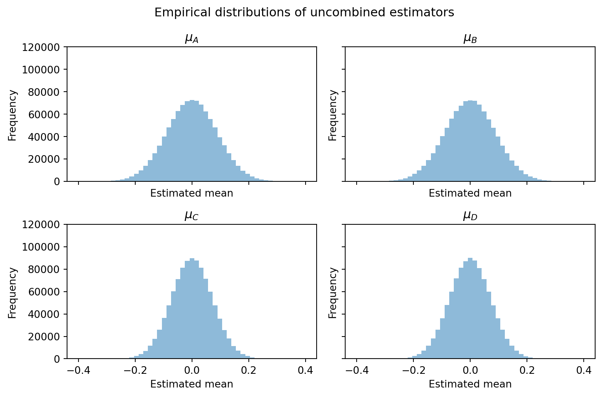
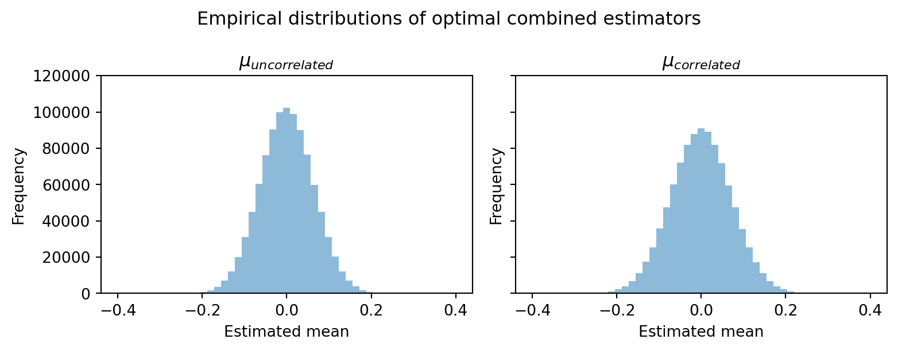

Code
import example as ex
e = ex.simulate(trials = 1000000)
c = ex.make_combined(e)
fs = (8.25,5.5)
ex.plot_estimates(e,fs=fs)
ex.plot_combined(c,fs=fs)

Alan Zhang
June 22, 2026
Suppose that you want to know the value of some parameter \(\theta\). Two statisticians approach you with their estimators, \(\mu_{1}\) and \(\mu_{2}\). Assume that both are unbiased and that \(\mu_{1}\) has variance \(\sigma_{1}\) and \(\mu_{2}\) has variance \(\sigma_{2}\). Furthermore, assume that the two estimators have zero covariance. What’s the best way to form your belief about what the value of \(\theta\) is?
The simplest and most intuitive solution would be to take the estimate with the lower variance and run with it. After all, if both the estimates are unbiased, then the one with the lower variance is better! And that’s true enough, but it turns out that we can do better than just choosing between the two estimates we’ve been given. Instead of just choosing between \(\mu_{1}\) and \(\mu_{2}\), let’s consider linear combinations of the form
\[ \mu_{c} = a\mu_{1} + b\mu_{2} \]
We want to find the values of \(a\) and \(b\) that give us the minimum variance unbiased estimator of \(\theta\). First, this means we must constrain \(a\) and \(b\) to sum to \(1\), as otherwise \(\mu_{c}\) would be biased. Then we have
\[ \mu_{c} = a\mu_{1} + (1-a)\mu_{2} \]
and since \(\mu_{1}\) and \(\mu_{2}\) have zero covariance, we have that
\[ \operatorname{Var}(\mu_{c}) = a^2\sigma_{1} + (1-a)^2\sigma_{2} \]
Taking the derivative of the variance with respect to \(a\), setting it equal to zero and solving for the optimal value of \(a\) gives us
\[ \begin{aligned} \frac{d \operatorname{Var}(\mu_{c})}{d a} &= 2a\sigma_{1} - 2(1-a)\sigma_{2} \\ 0 &= 2a\sigma_{1} - 2(1-a)\sigma_{2} \\ 2a(\sigma_{1} + \sigma_{2}) &= 2\sigma_{2} \\ a &= \frac{\sigma_{2}}{\sigma_{1}+\sigma_{2}} \end{aligned} \]
Hence the optimal estimate that we can make is
\[ \mu^* = \frac{\sigma_{2}}{\sigma_{1} + \sigma_{2}}\mu_{1} + \frac{\sigma_{1}}{\sigma_{1}+\sigma_{2}}\mu_{2} \]
Furthermore, solving for the variance of the estimator,
\[ \begin{aligned} \operatorname{Var}(\mu^*) &= (\frac{\sigma_{2}}{\sigma_{1}+\sigma_{2}})^{2}\sigma_{1} + (\frac{\sigma_{1}}{\sigma_{1} + \sigma_{2}})^{2}\sigma_{2} \\ \operatorname{Var}(\mu^*) &= \frac{1}{(\sigma_{1}+\sigma_{2})^2}(\sigma_{2}^2\sigma_{1} + \sigma_{2}\sigma_{1}^2) \\ \operatorname{Var}(\mu^*) &= \frac{1}{(\sigma_{1}+\sigma_{2})^2}(\sigma_{1}\sigma_{2}(\sigma_{1}+\sigma_{2})) \\ \operatorname{Var}(\mu^*) &= \frac{\sigma_{1}\sigma_{2}}{\sigma_{1}+\sigma_{2}} \end{aligned} \]
First, we can see from the derived weights on the two estimates \(\frac{\sigma_{2}}{\sigma_{1}+\sigma_{2}}\) and \(\frac{\sigma_{1}}{\sigma_{1}+\sigma_{2}}\) that the only situation in which you only use one of the estimates is where its variance is zero. In other words, if you have a perfect estimate of the parameter \(\theta\) you can just use that - but in any other scenario, you also want to use the other estimate.
We can also quantify the reduction in variance from using the combined estimator instead of the estimate with the lower variance. Without loss of generality assume \(\sigma_{1} \leq \sigma_{2}\) and that \(\sigma_{2} = k\sigma_{1}\) for \(k \geq 1\). Then we have
\[ \begin{aligned} \operatorname{Var}(\mu_{1}) - \operatorname{Var}(\mu^*) &= \sigma_{1} - \frac{k\sigma_{1}^2}{\sigma_{1}+k\sigma_{1}} \\ &= \frac{1}{1+k}\sigma_{1} \end{aligned} \]
This variance reduction is maximized when \(k = 1\), in which case \(\sigma_{1} = \sigma_{2}\) and using the combined estimator gives us half the variance of using either estimator alone.
All of the math above was kept simple by the fact that we assumed \(\operatorname{Cov}(\mu_{1},\mu_{2}) = 0\). Now, let’s take away that assumption and have \(\operatorname{Cov}(\mu_{1},\mu_{2}) = \tau\) and see what happens. As before, we need to consider estimators of the form \(a\mu_{1} + b\mu_{2}\) with \(a + b = 1\) in order to get an unbiased estimator. We solve for the optimal weights by minimizing the variance given by
\[ \begin{aligned} \operatorname{Var}(\mu_{c}) &= a^2\sigma_{1} + (1-a)^2\sigma_{2} + 2a(1-a)\tau \\ \frac{d \operatorname{Var}(\mu_{c})}{d a} &= 2a\sigma_{1} - 2(1-a)\sigma_{2} + 2\tau - 4a\tau \\ 0 &= 2a\sigma_{1} - 2(1-a)\sigma_{2} + 2\tau - 4a\tau \\ 2\sigma_{2} - 2\tau &= a(2\sigma_{1} + 2\sigma_{2} - 4\tau) \\ a &= \frac{\sigma_{2}-\tau}{\sigma_{1}+\sigma_{2} - 2\tau} \\ \end{aligned} \]
Of course, this implies that
\[ b = \frac{\sigma_{1} - \tau}{\sigma_{1} + \sigma_{2} - 2\tau} \]
So already, the weights on the two estimators are similar to that of the uncorrelated case, but the covariance term does show up. Our optimal estimator in this case is thus
\[ \hat{\mu} = \frac{\sigma_{2} - \tau}{\sigma_{1}+\sigma_{2}-2\tau}\mu_{1} + \frac{\sigma_{1}-\tau}{\sigma_{1}+\sigma_{2}-2\tau}\mu_{2} \]
Deriving the variance of this estimator the same way as in the uncorrelated case gives
\[ \begin{aligned} \operatorname{Var}(\hat{\mu}) &= (\frac{\sigma_{2}-\tau}{\sigma_{1}+\sigma_{2}-2\tau})^{2}\sigma_{1} + (\frac{\sigma_{1}-\tau}{\sigma_{1}+\sigma_{2}-2\tau})^{2}\sigma_{2} + 2\tau\frac{(\sigma_{1}-\tau)(\sigma_{2}-\tau)}{(\sigma_{1}+\sigma_{2}-2\tau)^2} \\ &= \frac{1}{(\sigma_{1}+\sigma_{2}-2\tau)^2}((\sigma_{2}-\tau)^{2}\sigma_{1} + (\sigma_{1}-\tau)^2\sigma_{2} + 2\tau(\sigma_{1}-\tau)(\sigma_{2}-\tau)) \\ &= \frac{1}{(\sigma_{1}+\sigma_{2}-2\tau)^2}(\sigma_{2}^{2}\sigma_{1} - 2\tau\sigma_{1}\sigma_{2} + \tau^{2}\sigma_{1} + \sigma_{1}^{2}\sigma_{2} - 2\tau\sigma_{1}\sigma_{2} + \tau^{2}\sigma_{2} + 2\tau(\sigma_{1}\sigma_{2} - \tau\sigma_{1} - \tau\sigma_{2} + \tau^{2})) \\ &= \frac{1}{(\sigma_{1}+\sigma_{2}-2\tau)^{2}}(\sigma_{2}^{2}\sigma_{1} + \sigma_{2}\sigma_{1}^{2} - 2\tau\sigma_{1}\sigma_{2} - \tau^{2}\sigma_{1} - \tau^{2}\sigma_{2} + 2\tau^{3}) \\ &= \frac{1}{(\sigma_{1}+\sigma_{2}-2\tau)^{2}}((\sigma_{1}+\sigma_{2}-2\tau)(\sigma_{1}\sigma_{2}-\tau^{2})) \\ &= \frac{\sigma_{1}\sigma_{2}-\tau^{2}}{\sigma_{1}+\sigma_{2}-2\tau} \end{aligned} \]
Rewriting the formula for the variance in terms of the correlation between \(\mu_{1}\) and \(\mu_{2}\) gives us
\[ \operatorname{Var}(\hat{\mu}) = \frac{\sigma_{1}\sigma_{2}(1-\rho^{2})}{\sigma_{1}+\sigma_{2}-2\rho(\sigma_{1}\sigma_{2})^{\frac{1}{2}}} \]
Of course, we can immediately see that if \(\tau = 0\) this reduces to the case we derived before. We can also derive some other interesting conclusions from the formulae for the uncorrelated and correlated cases. Imagine you’re asked to choose between two sets of two unbiased estimators, \(\mu_1,\mu_2\) and \(\mu_3,\mu_4\). You’re told that the variances of the estimators are \(\sigma_1 = 1.1, \sigma_2 = 1.1, \sigma_3 = 1, \sigma_4 = 1\). The results above show that in order to know which pair is best, you need to know the correlation between the estimators instead of just their variances! Now, suppose that you ask about the correlations and find out that \(\rho(\mu_1,\mu_2) = 0\) and \(\rho(\mu_3,\mu_4) = 0.5\). Then, denoting the variance of the optimal combined estimator from the first pair as \(V_1\) and that of the second pair as \(V_2\), we can calculate that \(V_1 = 0.55\) and \(V_2 = 0.75\). So even though each estimator in the second pair was individually better than either from the first pair, when taken together the first pair was better since they were uncorrelated!
Let’s illustrate this with a computational example. For the below plots I consider \(4\) estimators, \(\mu_A, \mu_B, \mu_C, \mu_D\), all trying to estimate the mean of a standard normal distribution given some samples from it. To calculate \(\mu_A\) and \(\mu_B\) I take independent samples of size \(125\) and take the sample mean. For \(\mu_C\) and \(\mu_D\) I take a sample of size \(200\). \(\mu_C\) is the mean of entries \(1\) to \(190\) and \(\mu_D\) is the mean of entries \(10\) to \(200\). By repeatedly sampling and taking the values of each estimator we can visualize the variance of each by looking at how spread out the values they take are.


The plots for \(\mu_A\) and \(\mu_B\) are the most spread out, more so than those of \(\mu_C\) and \(\mu_D\). \(\mu_{\text{uncorrelated}}\), the estimator that combines \(\mu_A\) and \(\mu_B\), has the least spread.
We can also see from the derived results that correlation between estimators isn’t always bad. The numerator of \(\operatorname{Var}(\hat{\mu})\) is proportional to \((1-\rho^2)\) so it’s decreasing in the magnitude of the correlation. From this we can see that correlation is always beneficial if it’s negative. Intuitively, you can think of this in terms of how the errors in the estimators move relative to one another. If the correlation between estimators is negative then the errors move in opposite directions to each other. By combining the two estimates they partially cancel each other out; the negative correlation always helps you. The case of positive correlation is a bit more complicated. Depending on the magnitude of the correlation, it can either help the estimate or hurt it. For example, if \(\rho^2 = 1\) and the estimators have different variances we can perfectly estimate the parameter because the errors move together deterministically.
So, why did I choose to write about this result? After all, the derivation isn’t particularly difficult. The following isn’t mathematically precise (or precise in any other way), but relates to some thoughts I’ve had about the relationship between estimators and belief formation. Imagine you think of forming beliefs on some topic as being like estimating a parameter. Now, beliefs about topics are probably a lot more complicated than estimating one parameter but one way to motivate the comparison would be to think of this as estimating the probability that proposition \(P\) is true.
Once we’ve decided we’re going to try form beliefs on this topic, how are we going to go about doing so? In practice, there’ll likely be an enormous range of information sources on it. In this analogy we can think of all these sources as our “estimators”. We also can’t use all these sources - there isn’t enough time to read everything on a given topic. So in some ways, belief formation is like our problem of choosing sets of estimators. And if we model it that way, these results do give us some indication of how we can go about choosing; it implies we should choose a set of unbiased estimators that are negatively correlated.